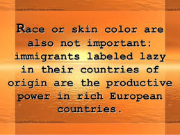

Self-Esteem
Body Image
What is Body Image? What are the different types of Body Image?
When you look in the mirror how do you see yourself? Do you think "Hm, I am one hot tamale!", or do you think "Ugh, another day another ugly me."
This is what you call body image. Body image is how you see yourself when you look in the mirror or when you picture yourself in your mind.
It encompasses:
What you believe about your own appearance, which includes your memories, assumptions, and generalizations. How you feel about your body, including your height, shape, and weight. How you sense and control your body as you move. How you feel in your body, not just about your body. To sum it up body image is all about how you are feeling that day. For example, you are feeling blah, you would rather be in your oversized t-shirt and boyshorts
sitting at home watching 'Charmed' reruns, than sitting in class or at work listening to what your superior has to say. You feel completely ugly. People can tell this about you without you saying a word.
That is because your body is showing people that you feel blah and ugly.
Negative Body Image:
A distorted perception of your shape. You perceive parts of your body unlike they really are. You are convinced that only other people are attractive and that your body size or shape is a sign of personal failure. How you feel ashamed, self-conscious, and anxious about your body. You feel uncomfortable and awkward in your body. People with negative body image have a greater likelihood of developing an eating disorder and are more likely to suffer from feelings of depression, isolation, low self-esteem, and obsessions with weight loss.
We all may have our days when we feel awkward or uncomfortable in our bodies, but the key to developing positive body image is to recognize and respect our natural shape and learn to overpower those negative thoughts and feelings with positive, affirming, and accepting ones.
Positive Body Image:
A clear, true perception of your shape you see the various parts of your body as they really are. You celebrate and appreciate your natural body shape and you understand that people's physical appearance says very little about their character and value as a person. You feel proud and accepting of your unique body and refuse to spend an unreasonable amount of time worrying about food, weight, and calories. You feel comfortable and confident in your body.
ACCEPT YOURSELF!! ACCEPT YOUR BODY!!
Can Body Image effect your Weight??
People with negative body image have a greater likelihood of developing an eating disorder and are more likely to suffer from feelings of depression, isolation, low self-esteem, and obsessions with weight loss.
We all may have our days when we feel awkward or uncomfortable in our bodies, but the key to developing positive body image is to recognize and respect our natural shape and learn to overpower those negative thoughts and feelings with positive, affirming, and accepting ones.
Skin Color
Are you proud of your skin color?
If you're proud of your skin color keep being proud. If you are not I'm going to tell why you should be. People usually think that the lighter your skin the pretty you are but that's not true. All skin colors are beautiful and unique because no one can change your skin color or your beauty. Girls with darker skin color are very beautiful to me. Your skin color is yours and you should be very proud of it because people try to make their skin dark but you are born with your dark and natural beauty. That doesn't mean light skinned people aren't pretty. Lighter people are beautiful too but society is so negative to dark skins it makes some people feel bad.
ALL SKIN COLORS ARE BEAUTIFUL AND YOU SHOULD BE PROUD.

Character
What is Character and how does it impact self-esteem?
Character is the fundamental qualities a person has. These are
upheld even when no one is around and are built into a person's life.
In order to have good self-esteem, you must be confident in your character and who you are.
How you see yourself or your self-concept affect your self-esteem.
A person's self-concept is your social character or abilities and your thinking.
A good self-concept and good character go hand in hand.
Having a good self-concept is the first step.
If your self-concept is not so good it can be changed.
In order to change your self-concept, you must change your:
Attitude
Mood
Value
Belief
If you can accept that you can change these things then you can accept that you can change how you feel about yourself
and the idea of who you are will change as well.
You can learn to understand more about the best part of your character through self-improvement.
You will be able to appreciate who you are and increase your confidence and self-esteem.